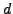

Almost all approaches to solve a PDE are based upon a spatial discretisation of the computational domain -- a grid. This paper presents an algorithm to traverse a hierarchy of -dimensional adaptive cartesian grids represented by a spacetree. The algorithm uses stacks as data structure, and the storage requirements for the pure grid reduce to one bit per vertex for both the complete grid structure and the multilevel grid relations. Since the traversal algorithm uses only stacks, the algorithm's cache hit rate is higher than 99.9 percent, and the runtime costs per vertex remain constant not depending on the overall number of vertices, even if the required memory exceeds the main memory available. The algorithmic approach might be the basis to solve any -dimensional problem represented by a compact discrete -point operator as they occur e.g. in image processing or in FEM codes. In the latter case, one can implement a Jacobi smoother, a Krylov solver, or a geometric multigrid scheme within the presented traversal scheme according to literature. Results for a matrix-free multigrid FAS scheme are presented. Due to the matrix-free approach, this multigrid scheme inherits the very low memory footprint and the good cache characteristics from the pure grid traversal.